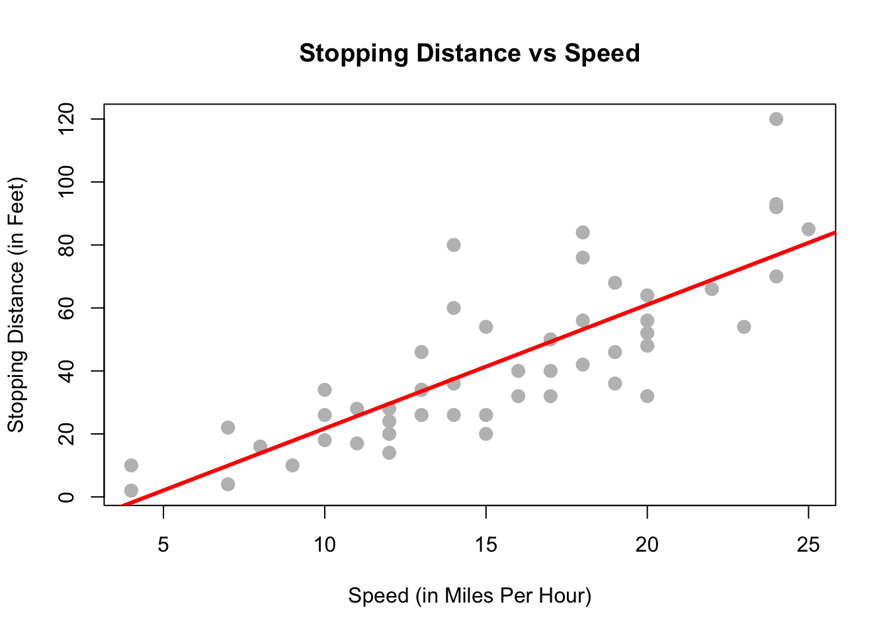
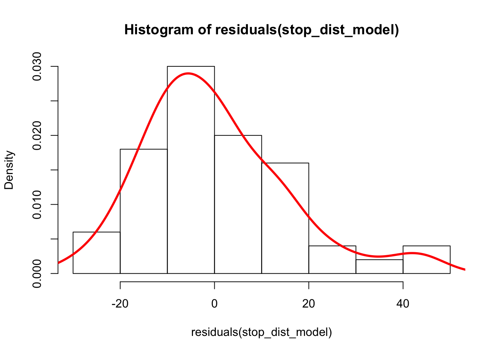

Chapter 2 R
2.1 A very quick R intro
stop_dist_model = lm(dist ~ speed, data = cars)
plot(dist ~ speed, data = cars,
xlab = "Speed (in Miles Per Hour)",
ylab = "Stopping Distance (in Feet)",
main = "Stopping Distance vs Speed",
pch = 20,
cex = 2,
col = "grey")
abline(stop_dist_model, lwd = 3, col = "red")

Figure 2.1: A simple plot in R
hist(residuals(stop_dist_model),freq=FALSE)
lines(density(residuals(stop_dist_model)),col='red',lwd=3)

Figure 2.2: what you were looking for
2.2 Can do Math
\[ \begin{aligned} R^2 &= \frac{\text{SSReg}}{\text{SST}} = \frac{\sum_{i=1}^{n}(\hat{y}_i - \bar{y})^2}{\sum_{i=1}^{n}(y_i - \bar{y})^2} \\[2.5ex] &= \frac{\text{SST} - \text{SSE}}{\text{SST}} = 1 - \frac{\text{SSE}}{\text{SST}} \\[2.5ex] &= 1 - \frac{\sum_{i=1}^{n}(y_i - \hat{y}_i)^2}{\sum_{i=1}^{n}(y_i - \bar{y})^2} = 1 - \frac{\sum_{i = 1}^{n}e_i^2}{\sum_{i=1}^{n}(y_i - \bar{y})^2} \end{aligned} \]
But don’t have to!